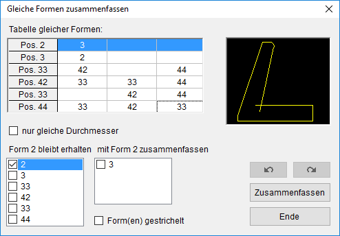
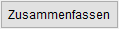

")
Formstahl-Auszüge mit identischen Abmessungen suchen und zu einem Formstahl-Auszug zusammenfassen. Öffnet den Dialog Gleiche Formen zusammenfassen.
Falls in der Zeichnung keine gleichen Formen enthalten sind, erscheint eine entsprechende Meldung. Ausgeblendete Folien werden nicht durchsucht.
Optionen im Dialog "Gleiche Formen zusammenfassen"

Tabelle gleicher Formen
In der ersten Spalte werden alle Positionen aufgeführt, die mindestens eine identische Zweitform aufweisen. Dahinter werden die gefundenen Positionen aufgeführt. Je nach Anzahl der Positionen können Sie diese horizontal und/oder vertikal durchscrollen.
Rechts neben der Tabelle wird die Form abgebildet, die unter Form n bleibt erhalten selektiert wird.
nur gleiche Durchmesser
Nur identische Formen mit demselben Durchmesser werden zusammengefasst. |
|
Eine Unterscheidung nach Durchmessern findet nicht statt. |
Form n bleibt erhalten
In diesem Auswahlfeld werden alle Positionen aufgeführt, die mindestens eine identische Form aufweisen. Setzen Sie einen Haken bei der Position, deren Auzugsform erhalten bleiben soll. Die Auszugsform wird auf der Zeichnung markiert.
mit Form n zusammenfassen
In dieser Auswahl werden die mit Form n bleibt erhalten identischen Auszugsnummern aufgelistet. Wählen Sie die Formen aus, die mit der vorher ausgewählten Formnummer zusammengeführt werden sollen. Auch diese Auszüge werden auf dem Plan markiert.
Form(en) gestrichelt (Zusatzauszüge)
Die Form, die mit Form n zusammengefasst wird, wird gestrichelt. Mit den Funktionen für die Positionierung [BiPos] und Formverlegung [VeForm] kann die Auszugsform bearbeitet werden. |
|
Diese Auszüge werden gelöscht. |
Die Anzahl am Hauptauszug wird in beiden Fällen summiert.
|
Letzte Aktion zurücksetzen/wiederherstellen. |
 |
Die Aktion wird ausgeführt. |
Das Fenster wird geschlossen. |